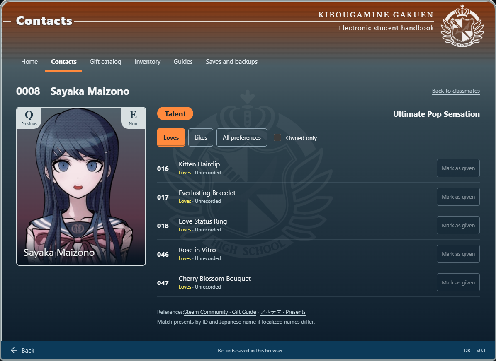
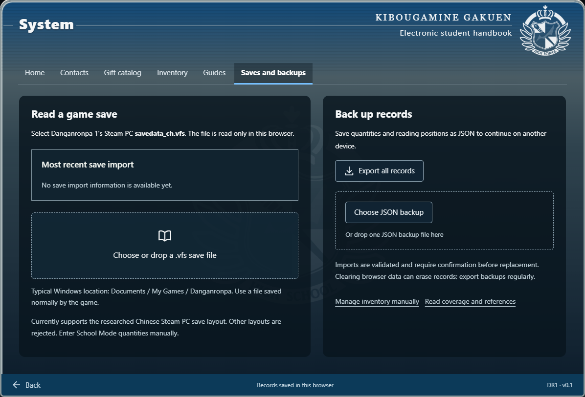

DanganMate
A companion handbook for Danganronpa players.

Overview
While playing, I struggled to check which gifts I owned, how many I had and who would like them. Manually counting over 100 items was too slow.
- My decisions
- I proposed character–gift lookup, inventory tracking and importing supported game saves to avoid entering each quantity by hand.
- AI workflow
- AI generated all the code. I defined the requirements, reviewed the results and checked how the tool worked.
This unofficial fan tool uses Danganronpa artwork and interface references.
Save import & project scope

Import a save or enter quantities
Supported Steam PC saves provide inventory quantities without entering each gift by hand.
Import is limited to supported save formats. Players can also manage quantities manually and export their records as a backup.